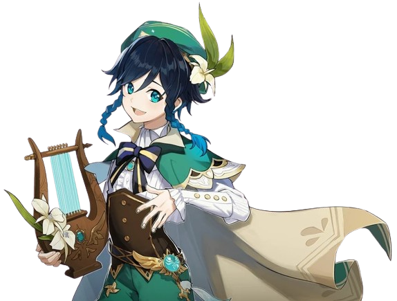
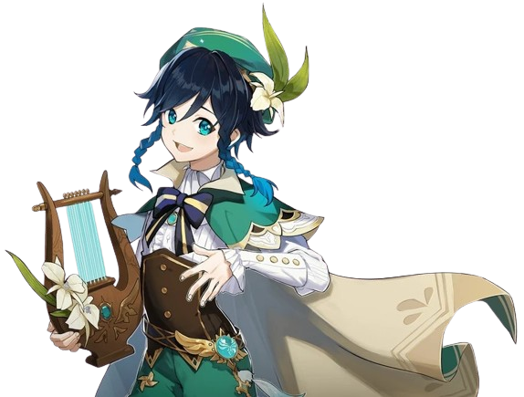

Windborne Bard
Venti
A bard that seems to have arrived on some unknown wind — sometimes sings songs as old as the hills, and other times sings poems fresh and new. Likes apples and lively places but is not a fan of cheese or anything sticky. When using his Anemo power to control the wind, it often appears as feathers, as he's fond of that which appears light and breezy.